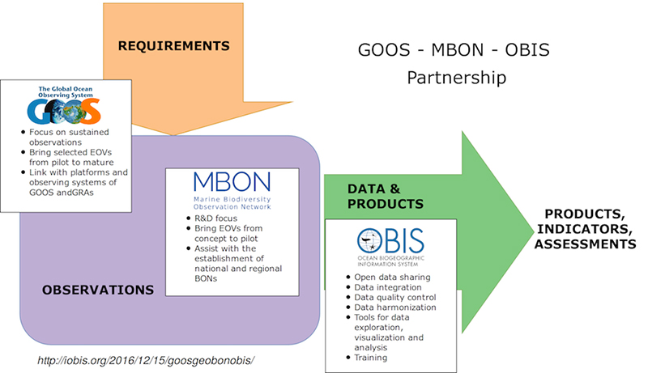

MBON Global Efforts
MBON: A GEO BON Thematic Node and Global Partnership
MBON is formally recognized as a thematic node of the Group on Earth Observations Biodiversity Observation Network (GEO BON). The three co-leads of global MBON are: Frank Muller-Karger, University of South Florida; Isabel Sousa-Pinto, University of Porto; and Mark Costello, University of Auckland.
MBON actively collaborates with the Ocean Biodversity Information System (OBIS) and the Global Ocean Observing System (in particular the GOOS Biology and Ecosystem Panel) and many other global organizations and initiatives to build a sustained, coordinated, global ocean observing system to assess the state of the oceans’ biological resources and ecosystems. This collaboration leverages the strength of participating groups in support of the GOOS Framework for Ocean Observing as illustrated in the figure below.

MBON Pole to Pole
MBON Pole to Pole is facilitating the integration of biological and environmental data for countries along the Pacific and Atlantic coasts of the Americas, from the Arctic to Antarctica. Changes in marine biodiversity are being documented in these regions and effective decision-making requires a detailed understanding of these changes. The MBON Pole to Pole is being implemented as a network of cooperating research institutions, marine laboratories, parks, and reserves that seek to address common problems related to sustaining ecosystem services through conservation ecology. MBON Pole to Pole is a voluntary effort and a partnership among independent monitoring and research programs, GOOS, OBIS, and MBON. The work is aligned with the objectives of the Intergovernmental Oceanographic Commission’s Global Ocean Observing System (GOOS), AmeriGEO, and the GEO Work Programme.
Learn more about MBON Pole to Pole.
Asia-Pacific MBON
In 2019, GEO BON announced establishment of Asia-Pacific MBON to further development of marine biodiversity science in the Asia-Pacific region, as a sub-group of the MBON and Asia-Pacific BON networks of GEO BON. The geographic scope of AP-MBON extends from pole to pole through Asia and the western Pacific, including the Pacific islands and the Indian Ocean. It includes the deepest ocean trenches, and the Coral Triangle, the highest density of marine species on Earth, as well as the highest densities of human populations.
IABO
The International Association for Biological Oceanography (IABO) is a global non-profit organization dedicated to promoting the advancement of knowledge of the biology of the sea by providing opportunities for communication between marine biologists. IABO supports the network by raising awareness about MBON activities and promoting the coordination of biodiversity efforts across the globe. As member of the Scientific Committee on Oceanic Research (SCOR) IABO fosters international collaborations with the scientific community and across disciplines in support of MBON goals.